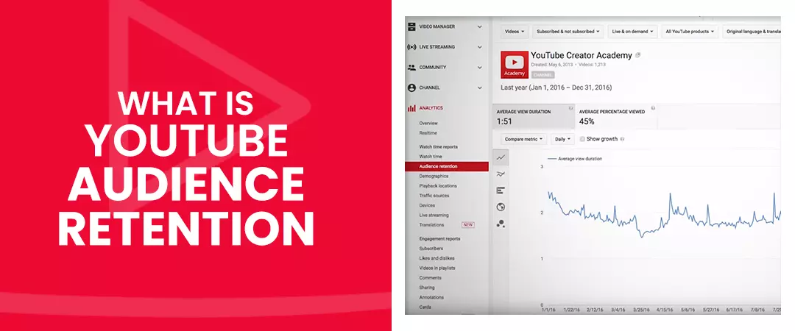
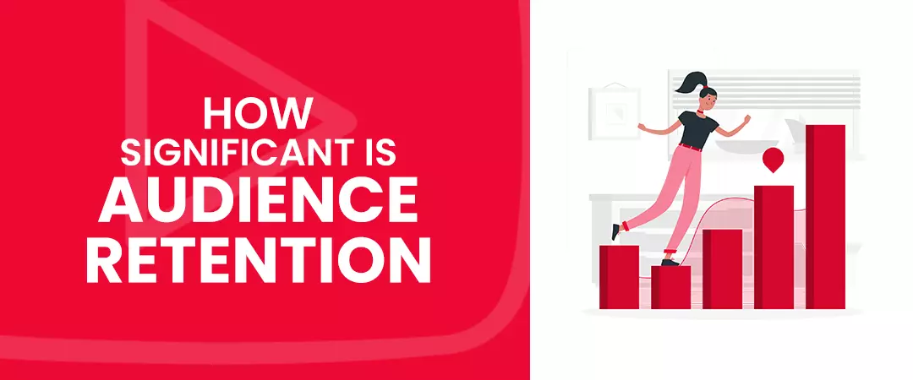
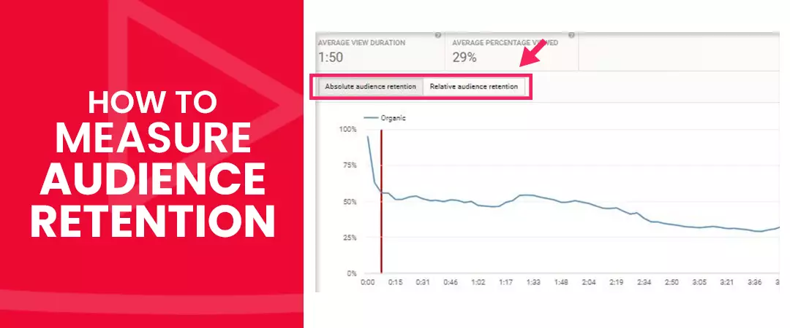
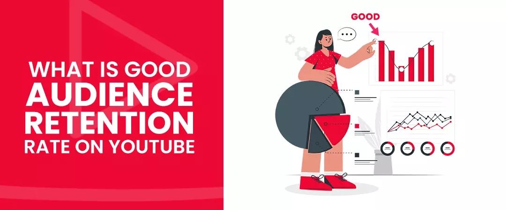
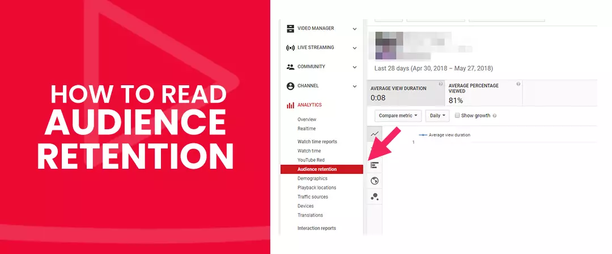
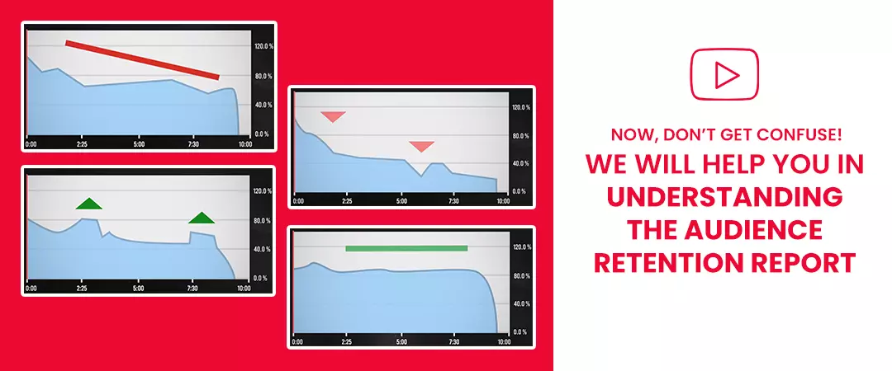
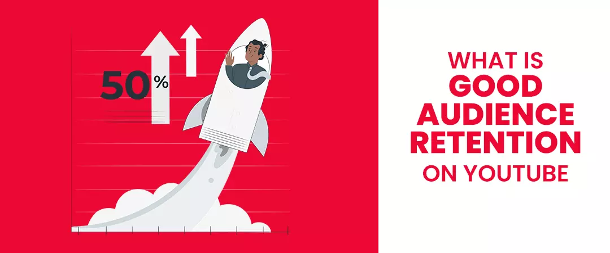

Audience retention YouTube refers to the extent of a video a viewer watches before dropping off, which is very useful information to have. Therefore, itis a key indicator in terms of how engaging your videos are. If you know when viewers are parting your videos then you know what you need to work on to upgrade your ability to keep the attention of your audience all throughout the video, or at least a good share/portion of it.
You can increase YouTube audience retention 2021, by using a hook to sustain viewership, harnessing best keywords, b-rolls, pattern interrupts, linking to playlists, table of content and jump cuts, etc.
We will talk about all the strategies in detail in this blog, but first, let us understand:
Contents
- 1. What is audience retention on YouTube?
- 2. How significant is audience retention on YouTube?
- 3. How to measure YouTube audience retention?
- 4. What is a good audience retention rate on YouTube
- 5. How to read audience retention YouTube
- 5. What is good audience retention on YouTube
- 6. How to use audience retention card to improve your channel’s growth?
What is audience retention on YouTube?

Audience Retention is the average percentage of a YT video that audience watch. Videos with high YT audience retention tend to rank higher with the algorithm. It is actually a vital YT metric for those trying to convert theirvideo viewers into paying, converted customers.
In YouTube’s terms – measures the number of people who continue to watch your video after pressing the play button.
How significant is audience retention on YouTube?

Better rankings with algorithm
YouTube ranks videos that keep people watching. The higher this rate is, the more visible it will be on the platform, the higher it will rank in search results and get promoted in other places on the network, like the YT homepage.
YouTube recently confirmed that Audience Retention remains a crucial ranking factor of their algorithm:
Videos with consistently high audience retention and high watch-time have the potential to show up more frequently in search and suggested location on YT.
Learn here about how to increase YouTube watch time.
Both YouTube(subordinate) and Google (Parent) are highly focussed on consumer gratification, and high retention rates signify a very satisfied consumption of the content. Therefore,being directly proportional to your rankings with the algorithm, you must work to increase it.
Insights give you prospects for development
Recognizing when audience interest is sustained or when they stop watching/drop off your video can give intuition into zones of your video that are working well, as well as scenarios that need improvement. It further helps you making user-generated content with respect to the target audience’s need & preference as well as getting more viewers, engagement,subscriptions and grow YouTube channel eventually.
Many creators also choose to buy real active subscribers to grow their channel at a brisk pace.
How to measure YouTube audience retention?

When people generally watch only the first four minutes of a 10-minute video, you will have a retention rate of 40%.
It is measured in 2 ways:
1. Absolute audience retention-
It represents the percentage of views for every moment in the video.
2. Relative audience retention-
It represents the ability of your video to keep the target audience watching compared to other videos that have the same length. If a graph shows a percentage over 50% that implies your video is doing a better job than compared to a same time frame of other YT videos.
What is a good audience retention rate on YouTube

The target for YouTubers is an audience retention YouTube rate of 50% and above which is considered as good. Having a bad Audience Retention YT percentage can lead the algorithms to lower your video’s ranking.
Now, let us understand how to check and study this report…
How to read audience retention YouTube

You can read the audience retention report at the channel level and video level of YT Analytics.
To check this report at the channel level:
-
Sign into YouTube studio
-
From the left menu, select Analytics.
-
Choose the Engagement taband study for the Audience retention report.
-
Sign into YouTube Studio
-
From the left menu, select Videosand choose a video.
-
From the left menu, select Analytics.
-
Select the Engagement taband look for the Audience retention report.
Now, don’t get confuse, we will help you in understandingthe audience retention report

There are somephrases that may be highlighted on your card:
Intro:
-
Intro shows what percentage of your audience was still watching your video after the first 30 seconds. It helps you to understand how well your video hooked the target audience.
Continuous Segments:
-
These are the instants in your video, where almost no viewer dropped off.
Spikes:
-
Spikes or peaks are the best instant from your video that was either watch again or parts that viewers skipped to.
Dips:
-
Dips represents the segments in your video that had bad audience retention on YouTubeand were either skipped orwhere viewers stopped watching your video.
The slope of the audience retention graph represents, which parts of your video are most and least captivating.
-
This flat line represents that the viewers are watching that segment of your video from beginning to finish.
-
Plodding declines represent viewers are losing interest over time. All videos on this platform usually taper off.
-
Spikes represents that more viewers are watching, watching again or sharing those parts of your video.
-
Dips mean viewers are deserting or skipping at that exactfragment of your video.
The report conveys theessential data of consumer behaviour with respect to your content which the View metric alone can’t: Is your video is fascinating enough to keep the viewersengaged.
Now, you know, how to see audience retention YouTube & how to judge it. But wait, do you know?
What is good audience retention on YouTube

According to the YT community, a good goal to aim for is around 50% There are key factors that determine retentionpercentage including length of a video, quality of a video, and view count of a video. Low view statistics sometimes get higher retention rates because it primarily subscribers watching, on the other hand, channels with millions of views may agonize due to more viewers abandoning.
Therefore,compare within your video’s userretention percentage or yourbetween timelyoverall channel retention rate. Then,focus on increasing it from wherever it is now, and celebrate your own success instead of measuring yourself against others because their videos might have different lengths, different number of views and their channel might have more/less subscribers than yours.
How to use audience retention card to improve your channel’s growth?

Knowing when viewer’s interest is sustained or when they stop watching your video can give insight into areas of your video that are working well, as well as opportunities for improvement.
1. Intro percentage:
-
Formulate a compelling video thumbnail. Learn here how to create YouTube thumbnail. Give relevant title to accurately present your video content and avoid clickbait.
-
Hook your audience in the first 30 seconds of your video and research with different features to find one that will keep the audience engaged (we will talk about them later in this blog)
1. Continuous segment:
-
If the continuous segment is happening in a later portionof the video, you must include compelling content in theearly part of it.
-
Note- audience sizes characteristicallydecline over the length of the video.
-
You can createinnovative content by escalating on the content from the continuous segment, there is hypothetically more profit to go unfathomable into that topic.
2. Spikes:
-
Learn from them and implement the goodness into another content of yours.
-
Make sure your video is clear and does not require the users to watch again.
3. Dips:
-
Review the dips deeply and remove the shortcomings or the boring part.
-
Understand your target audience’sdemand & concentration and why they lost interest in a specific portion.
After understanding how to read audience retention, now, we will disclose some of the great fundamental strategies to know.
How to increase audience retention on YouTube
1. Create a captivating hook
The audience chooses whether or not they want to watch your video… within seconds.
In fact, YouTube says that the first 15 seconds can make or break your entire video, so hook your audience in the first few seconds.
A hook is the art of grabbing a viewer’s attention and make him/her want to continue watching. Fire eagerness among the audience by saying that you've got something amazing to share with them later on. You can share a tip, tutorial, a new product, a secret component, reveal contest winners, or even something funny. Whatever it is, hook them emotionally, and keep reminding them to watch till the end to get a value guaranteed. All the way through your promise reaches make sure to generate trending, unique, quality, entertaining, and great content.
Research shows that humans have an incredibly short attention span than that of a goldfish!
Therefore, present content according to your target audience demand and make the first 15 seconds of your video highly engaging and entertaining with these tips:
-
Say no to long intros.
-
By telling them that you are going to reveal a surprise, secret, undisclosed ingredient or a new product at the end.
-
Introduce a Table of Contents to getyour audience to keep watching by telling them accurately what will be discussed through the video.
-
Usethe Story-Telling technique to compel the audience to watch the majority of the video. Start with a motivative beginning and end with a strong climax to finish the story. You can also introduce your private stories!
-
Give your audience what you promised (avoid clickbait). If your video title says, “How to cook Italian food,” go on with it right away instead of telling the viewers first about trivial things like what you ate earlier or how YT transformed your life.
Types of hooks you can use include:
Clearly Specified Value-
-
This is the most up-front type of hook. Let the viewer know what they’ll get from watching your video.
A Preview-
-
Preview what’s coming up later on in the video. Make a video preview to let your audience know what’s to come and not drop off during the beginning.
Create a FOMO-
-
A fear of missing out hook can hold the audience for longer.
Begin your video with a fascinating flash coming up later in your video-
-
Show off the final result first to represent all stages to achieve a target goal.
Reveal contest winner at the last-
-
To get thebest audience retention on YouTube,disclose the winner of a contest at the last of your video.
2. Use Pattern Interrupts
After successfully hooking your viewer in the first 15 seconds of your video. Now, the most important strategy is to keep them engaged. Then, come pattern interrupts in the picture.
According to The Huffington Post: “A Pattern Interrupt is a technique to change a particular thought, behaviour or situation.”
Sprinkling interrupts like a light joke, snapshots of a popular culture/heritage or a camera angle change every 30 seconds can change a consumer behaviour positively and make him/her stay longer viewing your content.
3. Do keyword research for better audience retention, YouTube
Identify the problem, queries and pain of your target audience
Remember, only your specific target audience can increase your user retention, as your content is their desire! But to reach them you need to harness the right keywordsby doing YouTube keyword research (sometimes the long-tail ones).
The maximum watched videos, discourse a problem, meet a need, elaborate a topic or want, add value or just entertain. Marcus Clarke from Searchant.co says, “Keyword research is one effective way of improving user retention. By researching keywords, you will know what your target audience needs. Make use of YT’s autosuggest feature. Make the content relevant to your keywords and create content that adds value.” By researching keywords appropriately, you will know what your target audience is looking for and you can create content based on it.
Use Google ads keyword planner, YouTube’s auto-suggest feature, TubeBuddy or VidIQ to find the relevant & powerful keywords. For example, if your niche is travel, you can type the word in the search bar, YT will suggest the topics that most people search for.
Then include these keywords in your title, description and tags to drive relevant target audience and give answer to the question – how to rank YouTube videos and be aligned withthe algorithm!
4. Add B-rolls
Camera angle changes, graphical transitions, and other directional cuts are all conducts to increase audience retention without essentially switching to a new topic. They are very strong pattern interrupts which dramatically changes the mindset of a viewer. Use lots of B-rolls to keep your video content fresh and interesting. Adding b-roll or supplemental footage to your videos, with more cuts, gives it energy and life.
5. Use Jump Cuts
Jump cuts are popular with vloggers to keep viewers watching. Jump cuts are a great technique as they turn a long, static shot of a subject into a series of somewhat diverse shots.
Pro tip- Remember to make the interruptions to a minimum and do not let them be so disruptive that makes the audience to lose focus.
6. Engage your viewers visually
Provide a range of scenes to become more successful than just an individual talking to the camera. Insert cutaways, pop-up text, different footage, illustrations, animations and other graphics to keep it interesting for your viewers. Utilizing YouTube Cards and end screens also helps a great detail in increasing YouTube engagement.
7. Play your cards well with a pre-planned script
Sandra Chung from PlayPlay says, “Write an effective and thorough script before you even start creating your video, which in theory – sounds simple enough but it actually requires a few steps.
You’ll want to start with really understanding whom you plan to create this video for and why. This will help determine the tone and the style of the video you’ll use. For example, if you’re creating a video for a baby boomer audience, the language you use will naturally be quite different than if you were creating it for millennials.”
You must try to make your content really engaging, intriguing, and effective by using well-written scripts. Just make one and read it aloud to your friends & family and ask for suggestions to improve!
8. Make your viewers habitual of consuming your content
Posting consistency is very important in improving audience retention YouTube, 2021. Target audience and subscribers should know when to expect your next video. This safeguards that your audience is well-informed and ready to fully consume your content. Remember, Consistency develops trust – and trust builds consumer satisfaction with improved user retention rates!
9. Leverage YouTube analytics feature
Take advantage of the YouTube analytics to find out how your videos are performing. Analyse your previous video which has the best audience retention and learn from it. See how far viewers made through your video. The YouTube audience retention report gives you an average view duration. It represents where the views drop off. So, leverage these data to understand why viewers may have left around a specific mark and remove shortcomings as required.
Tip- Compare with yourself, not with others, as they may have different video length.
10. Leverage playlists feature
Organize your videos based on themes, or any other characteristic to provide your target audience with a structured viewing experience and increase your retention with multiplied watch time!
11. Leverage video chapter function
Kasper Langmann from Spreadsheeto says, “I think one thing that all YouTube content creators should be doing, whether it is for marketing purposes or personal, is making use of the video chapters function, which not only increases your user retention rates but also improves your watch time Having your video split up into accurately-named chapters allows a viewer to find what they need and reduces the risk that they will start to watch your content and then click away after a few seconds because they are not willing to wait for what they are after.” Serving your target audience get the information they need is the best step to success in YT’s marketing strategy. Therefore, plan to provoke their eagerness from linked chapters.
12. Link other similar videos
Within the video toincrease YouTube audience retention. Direct them to other similar videos through cards within the videos that will help your audience circum-navigate with comfort.
13. Avoid misleading viewers with irrelevant or exaggerated titles and thumbnails
Clickbait or such tricks, lead to bad audience retention YouTube and get viewers to click on other videos.
14. Have a co-host
Starring a co-host or a guest in the video with you creates anew energetic wave in increasing YTuser retention. You can tell jokes, have debates, and engage in a conversation that you wouldn’t be able to achieve if you are by yourself.
15. Eliminate insignificant content
Remove the shortcomings and the parts which have bad audience retention YouTube.
16. Include Graphics and Visuals
Overlays, title cards, picture in the picture are all enhancements you can include in post-production that increase YT audience retention. Petite prompts that represent at the bottom of the screen make it just a little longer. It can be text which summarizes what is presently being discussed, or preview text to the next topic so the audience will continue watching.
17. Identify your target audience’ need
By researching keywords appropriately, you will know what your target audience is looking for and you can create content based on it. Use Google Ads keyword planner, YT’s auto suggest feature, TubeBuddy or Canva to search keywords.
18. Use Humour
Scatter in some humour. Watchers that are laughing aren’t likely to click away. So, include humorous touch to Increase YT audience retention.
19. Link to a playlist
At the end of your video, link to a playlist so that a viewer keeps watching your videos.
20. Leverage YouTube cards
If you notice (using YT analytics) there’s a drop off halfway through your video, then create a card that link your embed videos or related videos.
21. Don’t jump with your Logo in starting
Always place your logo after you’ve hooked your viewers.
22. Last, but not the least, treat each video separately
If many of the videos on your channel have a low audience retention rate, don’t worry it won’t affect your future videos!
I hope you found this as a relevant guide on maximizing YouTube audience retention on your channel.
Feel free to share!